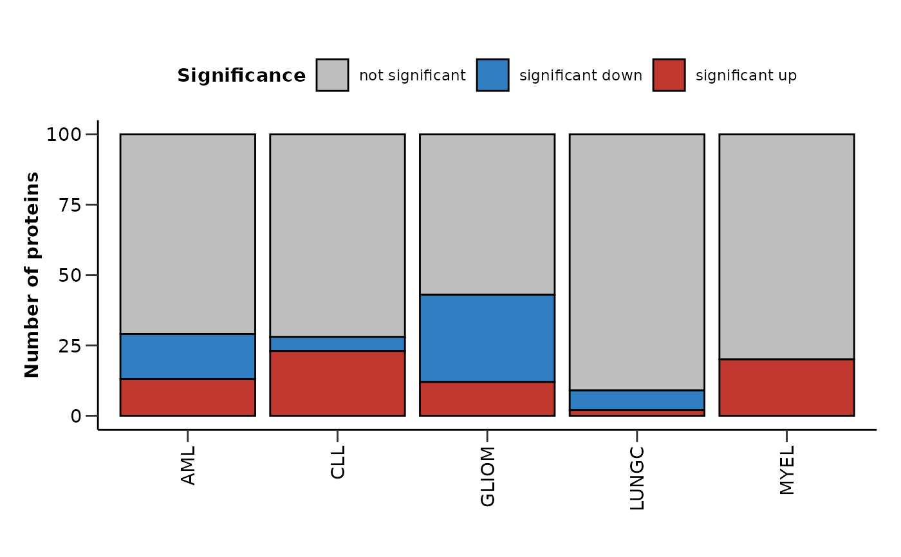

hd_plot_de_summary() creates summary visualizations of the results from multiple differential
expression analyses. It plots a barplot with the number of significant proteins and
upset plots both for the significant up and down regulated proteins for each analysis.
Usage
hd_plot_de_summary(
de_results,
variable = "Disease",
class_palette = NULL,
diff_exp_palette = "diff_exp",
pval_lim = 0.05,
logfc_lim = 0
)Arguments
- de_results
A list of differential expression results. It should be a list of objects created by
hd_de_limma()orhd_de_ttest()with the classes as names. See the examples for more details.- variable
The name of the variable containing the case and control groups.
- class_palette
The color palette for the classes. If it is a character, it should be one of the palettes from
hd_palettes(). Default is NULL.- diff_exp_palette
The color palette for the differential expression. If it is a character, it should be one of the palettes from
hd_palettes(). Default is "diff_exp".- pval_lim
The p-value limit for significance. Default is 0.05.
- logfc_lim
The logFC limit for significance. Default is 0.
Examples
# Initialize an HDAnalyzeR object
hd_object <- hd_initialize(example_data, example_metadata)
# Run differential expression analysis for different cases vs all others
controls <- c("AML", "CLL", "MYEL", "LUNGC", "GLIOM") # All diseases of interest
de_results_aml <- hd_de_limma(hd_object, case = "AML", control = setdiff(controls, "AML"))
de_results_lungc <- hd_de_limma(hd_object, case = "LUNGC", control = setdiff(controls, "LUNGC"))
de_results_cll <- hd_de_limma(hd_object, case = "CLL", control = setdiff(controls, "CLL"))
de_results_myel <- hd_de_limma(hd_object, case = "MYEL", control = setdiff(controls, "MYEL"))
de_results_gliom <- hd_de_limma(hd_object, case = "GLIOM", control = setdiff(controls, "GLIOM"))
res <- list("AML" = de_results_aml,
"LUNGC" = de_results_lungc,
"CLL" = de_results_cll,
"MYEL" = de_results_myel,
"GLIOM" = de_results_gliom)
# Plot summary visualizations
hd_plot_de_summary(res, class_palette = "cancers12")
#> Warning: Arguments in `...` must be used.
#> ✖ Problematic argument:
#> • alpha = 0.4
#> ℹ Did you misspell an argument name?
#> Warning: `aes_string()` was deprecated in ggplot2 3.0.0.
#> ℹ Please use tidy evaluation idioms with `aes()`.
#> ℹ See also `vignette("ggplot2-in-packages")` for more information.
#> ℹ The deprecated feature was likely used in the UpSetR package.
#> Please report the issue to the authors.
#> Warning: Using `size` aesthetic for lines was deprecated in ggplot2 3.4.0.
#> ℹ Please use `linewidth` instead.
#> ℹ The deprecated feature was likely used in the UpSetR package.
#> Please report the issue to the authors.
#> Warning: The `size` argument of `element_line()` is deprecated as of ggplot2 3.4.0.
#> ℹ Please use the `linewidth` argument instead.
#> ℹ The deprecated feature was likely used in the UpSetR package.
#> Please report the issue to the authors.
#> $de_barplot

#>
#> $upset_plot_up
#>
#> $upset_plot_down
#>
#> $proteins_df_up
#> # A tibble: 61 × 3
#> Shared_in `up/down` Feature
#> <chr> <chr> <chr>
#> 1 CLL up AARSD1
#> 2 CLL up ABL1
#> 3 CLL up ACAN
#> 4 GLIOM up ACE2
#> 5 GLIOM up ACP5
#> 6 CLL&MYEL up ACP6
#> 7 MYEL up ACTA2
#> 8 GLIOM up ACY1
#> 9 AML up ADA
#> 10 CLL&MYEL up ADA2
#> # ℹ 51 more rows
#>
#> $proteins_df_down
#> # A tibble: 51 × 3
#> Shared_in `up/down` Feature
#> <chr> <chr> <chr>
#> 1 GLIOM up ABL1
#> 2 AML up ACAN
#> 3 CLL up ACE2
#> 4 AML up ACP6
#> 5 LUNGC up ACY1
#> 6 LUNGC up ADA
#> 7 GLIOM up ADA2
#> 8 GLIOM up ADAM15
#> 9 GLIOM up ADAM23
#> 10 GLIOM up ADAM8
#> # ℹ 41 more rows
#>
#> $proteins_list_up
#> $proteins_list_up$AML
#> [1] "ADA" "AZU1" "APBB1IP" "ANGPT2" "ADGRG1" "ARTN" "ANGPTL4"
#> [8] "AGRP" "APEX1" "ATP6V1F" "ANGPTL2" "ADGRE5" "AHCY"
#>
#> $proteins_list_up$`AML&GLIOM`
#> [1] "AZU1"
#>
#> $proteins_list_up$`AML&CLL`
#> [1] "APBB1IP" "APEX1" "ADGRE5"
#>
#> $proteins_list_up$`AML&MYEL`
#> [1] "ADGRG1" "ARTN"
#>
#> $proteins_list_up$LUNGC
#> [1] "ALPP" "APP"
#>
#> $proteins_list_up$CLL
#> [1] "ARID4B" "APEX1" "ADAM8" "ARHGAP25" "ADAMTS8" "ALCAM"
#> [7] "ADGRE2" "B4GALT1" "APBB1IP" "ADGRE5" "ABL1" "AARSD1"
#> [13] "ATF2" "AMFR" "ADGRG2" "ADAMTS13" "ACP6" "ACAN"
#> [19] "ADAM15" "ANXA11" "ADA2" "ADAM23" "AGER"
#>
#> $proteins_list_up$`CLL&MYEL`
#> [1] "ACP6" "ADA2" "AGER"
#>
#> $proteins_list_up$MYEL
#> [1] "ADAMTS15" "ARTN" "ACTA2" "AGER" "ATOX1" "AIFM1"
#> [7] "AGRN" "APOH" "ADA2" "AREG" "AGR3" "ARSA"
#> [13] "ANG" "ACP6" "ADGRG1" "ANXA4" "ARHGEF12" "ATP5IF1"
#> [19] "ARSB" "ADM"
#>
#> $proteins_list_up$GLIOM
#> [1] "ANGPTL7" "AGXT" "ACY1" "ACE2" "AHSP" "APLP1" "ART3"
#> [8] "AMY2B" "ALDH1A1" "ACP5" "ARG1" "AZU1"
#>
#>
#> $proteins_list_down
#> $proteins_list_down$AML
#> [1] "ANGPT1" "APP" "ATG4A" "AGR2" "ARHGEF12" "ACAN"
#> [7] "ALPP" "ANXA3" "AMY2B" "AK1" "ANXA11" "ANXA10"
#> [13] "ACP6" "ANGPTL7" "AKT3" "ATOX1"
#>
#> $proteins_list_down$`AML&GLIOM`
#> [1] "ANXA11" "ATOX1"
#>
#> $proteins_list_down$`LUNGC&GLIOM`
#> [1] "ADGRE5" "APBB1IP" "ARID4B" "APEX1"
#>
#> $proteins_list_down$LUNGC
#> [1] "ADGRE5" "APBB1IP" "ARID4B" "APEX1" "APLP1" "ACY1" "ADA"
#>
#> $proteins_list_down$CLL
#> [1] "AZU1" "AREG" "ACE2" "ARTN" "AHCY"
#>
#> $proteins_list_down$`CLL&GLIOM`
#> [1] "ARTN" "AHCY"
#>
#> $proteins_list_down$GLIOM
#> [1] "ANGPT2" "AGER" "ADAMTS8" "APEX1" "ATOX1" "ADGRG1"
#> [7] "ADAM23" "ABL1" "ADGRE2" "ADAMTS15" "ADA2" "B4GALT1"
#> [13] "ANGPTL2" "ADAM15" "ADAM8" "ADGRE5" "ARID4B" "ARHGAP25"
#> [19] "APBB1IP" "ATXN10" "ARTN" "AMIGO2" "AGRP" "AHCY"
#> [25] "ADM" "AIF1" "ANGPTL4" "ATP5IF1" "ATP6V1F" "APOH"
#> [31] "ANXA11"
#>
#>